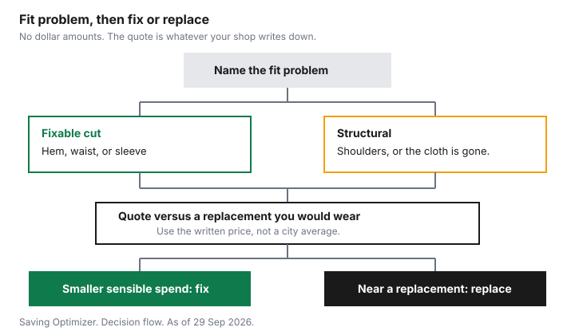

Clothing · Canada
Tailoring and Alterations in Canada: What Common Fixes Cost and When They're Worth It
A pair of trousers with a good seat and a bad length is a quote, not a discard. Two Canadian shops publish alteration prices, and those prices are the only dollar figures in the table below. They are not a Canadian average, and they are not the price at the shop on your corner. The decision is smaller than a survey: name the fit problem, get a written price, and set that price beside the replacement you would actually wear. Care habits that keep the cloth alive sit on the make clothes last longer guide. Dividing a price by the times you wear it sits on the wardrobe cost-per-wear guide. Buying the garment used in the first place sits on the Value Village guide. This page is the repair-versus-replace step in between. Education only. It is not a promise that a shop will match a list you found online.
Key takeaways
- Corinne's Sewing & Alterations in Powell River, B.C., publishes a casual pant hem at $20 and a formal pant hem at $25. The same page says an estimate at the fitting is not a quote, and that prices may move with the job.
- Tokyo Bag in Montreal publishes pant hems from $10 and jacket zippers from $40. The page calls the list a guide. The final price follows the complexity, and you get a quote after the atelier sees the garment.
- A hem, a waist, or a sleeve is often a fixable cut. Shoulders, a collapsed lining, or cloth that has already worn through are structural. The chart is that fork, with no dollar amounts on it.
- Example with made-up inputs: a $22 pair, a $20 hem, and 50 wears is $0.84 a wear. A $65 replacement worn 50 times is $1.30 a wear. Replace every number with your quote and your wears.
- Ask for the price in writing before you leave the garment. A brand counter can publish a hem price that applies only to that brand's own clothes.
Common alterations and typical price ranges (collect locally)
Collect the price where you live. A published list from another city tells you what a named shop was willing to print.
It does not tell you what your shop will charge on a lined wool skirt on a Saturday. Use the two lists as a way to see which jobs move the price: a plain pant hem, a jean hem that keeps the original stitch, a waist, a sleeve with a cuff, a zipper, a patch, and a full lining. Then phone or visit and write down the number you are actually offered.
Corinne's Sewing & Alterations, 7186 Warner Street, Powell River, B.C., publishes the left-hand prices. The about page says the shop is by appointment. The price-list page defines casual as garments that do not need complex construction, lining work, or formal tailoring, and formal as business and special-occasion clothes, including dress shirts, blazers, suits, and evening wear. Under the list, the page says prices may fluctuate up or down depending on the alteration, and that estimates at the initial fitting are not a quote. Tokyo Bag, 1036 Rue Gilford, Montreal, publishes the right-hand prices as starting points ("and up"). The page says the figures are a guide based on time, the final price depends on complexity, a quote comes after evaluation, and common repairs are allowed 1 day to 4 weeks. Specialty repairs get their own time estimate. Do not add the two columns together or split the difference. They are two shops.
| Job | Corinne's Sewing, Powell River | Tokyo Bag, Montreal | What moves the price | Cheap item or a quality item |
|---|---|---|---|---|
| Hem | Pant, casual $20. Pant, formal $25. Jean, folded hem $25. Jean, European hem $30. Dress or skirt $35 per layer. | Pants and jeans, take up hem from $10. Dresses and skirts, take up hem from $15. Shirts and tops, take up hem from $20. | Original hem, layers, lining, and whether the cloth is denim. | Worth a quote when you will keep wearing the pair. Skip it when the seat is already gone. |
| Take in | Pant or jean waist $30. Dress or skirt waist $25. Pant side seams, casual $15, formal $35. | Pants and jeans, waistband from $20. Dresses and skirts, waistband from $30. Shirts, inner and outer seams from $30. | Whether the zipper, pockets, or waistband have to be opened. | A waist on a coat or suit you will wear for years can beat a new one. A waist on a trend you are finished with does not. |
| Sleeve | Shirt, blouse, or dress sleeve, casual $25, formal $35. Shirt with cuff $40. Coat or sport jacket sleeve $40. | Shorten sleeve with cuffs from $40. Without cuffs from $20. Jacket cuffs without a button from $40. With a button from $50. | Cuffs, buttons, and a lining inside the sleeve. | A sleeve on a jacket with life left is a fixable cut. A sleeve on a torn shoulder is not the same job. |
| Zipper | Pant, skirt, or jean $25. Casual dress $25. Formal dress $35. Coat or jacket $35. Down jacket $40. | Dress or skirt, replace zip from $25. Jacket or coat, zip replacement from $40. | Length of the zip, a lining behind it, and down that has to be held out of the seam. | A zipper can cost more than a cheap replacement shirt. On a winter coat you still wear, the same line can be the cheaper path. |
| Patch | Patches $5 to $10. Rip or tear $10 to $15. Pockets, make or repair, $5 to $25. | Darn holes from $15. Patch holes from $20. Reinforce or replace buttons at $2 per button. | How large the hole is, and whether the patch has to disappear. | A small hole in cloth you like is a repair. A patch on fabric that is thin everywhere else only delays the replacement. |
Tokyo Bag also lists a full lining replacement from $100. Corinne's price list does not print a separate full-lining line. Coat hems on that list run $35 to $70, and a down-jacket hem is $65. If your job is a lining, ask both kinds of shop in your own city rather than assuming the coat-hem line includes it. Meg, a clothing brand with stores in Canada and the United States, publishes a different kind of list: standard hem $20, waist $30, take in side seams $30, sleeve hem with cuff $40, raise shoulder $40. The same page says Meg does not alter or repair garments purchased at another retailer, and that typical alterations take about 7 days. A brand counter is not your neighbourhood tailor. Read whose clothes the list covers before you treat $20 as the price of a hem.
Cost-per-wear logic for tailoring thrift and sale buys
Cost per wear is the amount you paid, including the alteration, divided by the times you wear the garment. The wardrobe guide walks through that division for a whole closet.
Here it answers one question: does this quote earn its place on a piece you bought on sale or at a thrift shop? A low ticket is not automatically worth saving. A high ticket is not automatically worth a tailor. The cloth, the fit problem, and the number of wears you will actually get decide it.
Example with made-up inputs. Sale trousers at $22, a hem at $20, and 50 wears: $42 divided by 50 is $0.84 a wear. A replacement at $65, worn the same 50 times, is $1.30 a wear. Those three dollar figures and the 50 wears are made up. They are not Corinne's list, not Tokyo Bag's list, and not a store. If you will wear the sale pair 10 times, the same $42 is $4.20 a wear, and the replacement at 50 wears is the better division. Put your written quote in the $20 slot and your own wears in the 50 slot. A thrift jacket you do not like on your body fails the test before the arithmetic starts. The thrift guide is the buy-or-skip check. This page starts after you have already decided you would wear the piece if it fit.
| Path | Made-up dollars | Made-up wears | Cost per wear |
|---|---|---|---|
| Keep the sale pair and hem it | $22 plus a $20 hem, $42 | 50 | $0.84 |
| Replace it | $65 | 50 | $1.30 |
| Same hem, few wears | $42 | 10 | $4.20 |
Zipper, hem and lining repairs
A hem fails in public and looks optional until the trouser drags. On Corinne's list a casual pant hem is $20 and a formal pant hem is $25.
A folded jean hem is $25 and a European hem, the one that keeps the original jean stitch, is $30. Tokyo Bag starts pant hems at $10. The gap between those lines is the job, not a sale. Denim, an original hem, and a lining take longer than a plain turn-up. Bring the shoes you will wear. A hem marked in socks is a hem you will redo.
A zipper is a different repair from a hem. Corinne lists a pant, skirt, or jean zipper at $25, a coat or jacket zipper at $35, and a down-jacket zipper at $40. Tokyo Bag starts a dress zip at $25 and a jacket zip at $40. Down and a lining are why the coat line is higher than the pant line on both lists. If the zipper still runs and only the pull is ugly, say that. Replacing a whole zip when a pull would do is a larger job than you asked for. If the tape is torn out of the cloth, the repair is the cloth as well as the zip, and the quote should say so.
A lining replacement is the structural end of this list. Tokyo Bag prints full lining replacement from $100. That single line can be more than a new coat you would actually buy, which is the replace branch on the chart. It can also be less than a winter coat you already trust, which is the winter coat cost-per-wear question: more winters from a coat you have, versus a new coat you still have to break in. Ask whether the quote includes the lining fabric or only the labour. A shop that has not seen the coat has not given you that number yet.
DIY basics
A button, a snap, and a seam that has opened for a few centimetres are household sewing if you already have a needle and thread that matches in daylight. Knot the thread, sew through the cloth that is still sound, and stop before you gather the fabric into a pucker.
A fallen hem on an unlined pant can be the same job when the old fold is still visible and you are willing to live with your own stitches. The care guide treats a button and a simple hem as the repairs a household can do, and a broken coat zipper as the end of cheap repair. This page agrees, and it adds the prices above so you can see what you are refusing when you skip the shop.
Do not practise on a shoulder, a lined jacket hem, or a zipper you need this week. Shoulders set the way the garment hangs. A bad shoulder seam is not hidden by a good hem. Jeans that you want to look unaltered are the European-hem job on Corinne's list, not a first attempt with a stapler. If you do not own matching thread, the $2 button line on Tokyo Bag's list is a clue that a shop's small job can be smaller than a trip to buy notions you will use once. Repair cafés in that guide are about appliances and the right to repair a machine. Some communities also mend clothes at the same table. Phone before you carry a suit across town. A café that welcomes toasters does not owe you a lined hem.
Finding a good tailor
Ask for a quote in one short list. Name the garment and the fibre if the label states it.
Name the change: hem to these shoes, waist by the amount you can pinch, sleeve to the wrist bone. Say whether it is lined. Say the date you need it. Ask what is included: the original hem or a new one, the zipper tape, the buttons, the lining fabric. Ask what happens if the cloth is harder than it looked. Write the price and the pickup day before you leave the garment. Corinne's page is explicit that an estimate at the fitting is not a quote. Treat a verbal "about twenty" the same way until it is written down.
A good sign is a shop that looks at the garment before naming the price, the way Tokyo Bag describes a quote after evaluation. A bad sign is a price that cannot be repeated back, or a promise that any shoulder can be fixed. Shoulders and a worn-out seat are the structural branch. You can still ask. You should not be surprised when the answer is no, or when the quote meets the price of a replacement you would wear. Meg's list is a useful contrast when you are standing in a brand store: the printed hem applies to that brand's clothes, the page says other retailers' garments are refused, and the turnaround it prints is about 7 days. For everyone else, the price is the one your shop writes on your ticket.

Sources & date stamps
- Corinne's Sewing & Alterations, price list, sewingbycorinne.ca/price-list, checked 29 Sep 2026. Casual and formal definitions. Hem, waist, sleeve, zipper, and patch lines quoted above. Estimates are not a quote. Prices may fluctuate.
- Corinne's Sewing & Alterations, about page, sewingbycorinne.ca/about, checked 29 Sep 2026. Powell River, B.C., 7186 Warner Street. By appointment.
- Tokyo Bag, upcycling and repairs, tokyobag.ca/pages/upcycling-clothes-and-textile, checked 29 Sep 2026. 1036 Rue Gilford, Montreal. Starting prices quoted above. Quote after evaluation. Common repairs 1 day to 4 weeks.
- Meg, alterations, megest1994.ca/pages/alterations, checked 29 Sep 2026. Standard hem $20, waist $30, side seams $30, sleeve hem with cuff $40, raise shoulder $40. Meg garments only. About 7 days. Stores in Canada and the United States.
Frequently asked questions
What alterations are worth paying for?
A hem, a waist, or a sleeve on a garment you will keep wearing, when the written quote is smaller than the replacement you would actually buy. A zipper on a winter coat you still trust can be the same kind of spend. A patch on cloth that is thin everywhere, or a lining quoted near the price of a coat you would buy, is the replace side. Corinne's Sewing in Powell River and Tokyo Bag in Montreal publish figures. Your shop's written price is the one that counts.
How do I know if a garment can be altered?
A hem, a waist, and a sleeve are fixable cuts when the cloth around them is sound. Shoulders, a collapsed lining, and fabric that has already worn through are structural. The chart is that split, with no dollar amounts. A tailor who has not seen the garment has not answered the question. Ask, and treat a refusal as information rather than a challenge.
Is tailoring worth it on cheap clothes?
Sometimes. Example with made-up inputs: a $22 pair plus a $20 hem, worn 50 times, is $0.84 a wear, against a $65 replacement at $1.30 a wear over the same 50 wears. If you will only wear the cheap pair 10 times, that hem loses. The dollars and the wear counts are made up. Use your quote and your own wears.
Can I do basic alterations myself?
A button, a snap, and a short opened seam are household sewing if you have thread that matches in daylight. An unlined hem can be too, if you can live with your own stitches. A coat zipper, a lined hem, and a shoulder are shop jobs. A repair cafe organized around appliances does not owe you a suit hem. Phone before you carry tailored clothes across town.
How do I ask for a quote?
Name the garment, the change, whether it is lined, and the date you need it. Ask what is included and what happens if the cloth is harder than it looked. Write the price and the pickup day before you leave the garment. Corinne's price list says an estimate at the fitting is not a quote. A brand counter may alter only that brand's own clothes.
Researched and drafted with AI assistance and fact-checked against official Canadian sources. How we create content.